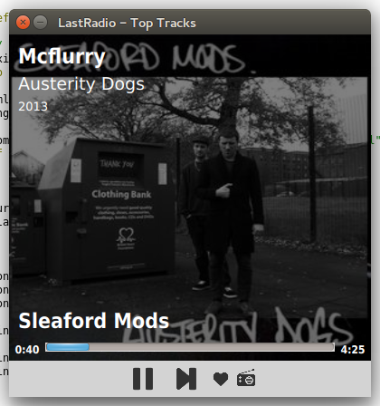

LastRadio - a simple Last.fm player written in Golang and QML Posted:
LastRadio is a simple Last.fm radio player written in Golang and QML, using Spotify (Premium) as music source.
I've listened a lot to Last.fm radio and I was quite upset as they stopped their streaming service. Same time I've started getting interested in the Go Programming Language, and stumbling over the QML bindings for Go led me to the idea to build a simple music player, using the Last-fm-API as data source and Spotify as music source. Which turned out working just fine!
Doing things in QML is always fun, and having packages written in Go available for both Last.fm-API and Libspotify reduced the work only on getting the UI done and building some logic to get the sound served...
After getting the whole thing packaged as .deb and making it available in a Lastradio-PPA, it's now ready to get installed on Ubuntu 14.04! (64-bit only atm, sorry).
sudo add-apt-repository ppa:martin-borho/lastradio sudo apt-get update sudo apt-get install lastradio
It's in a"pre-beta" state for now. But having all the things in place, I've started to reiterate over it already. Some nasty quirks left, but it already served me countless hours with my favourite music, which is exactly what was intended!
So overall I'm impressed by Go and it will be not the last time I've used it, I'm especially curious about using it on a server. Its primitives, interfaces, packaging and tools are fun to use. And channels and goroutines are just a great way to build something on top of the internet!
Law and Order Posted:
... ist es geraten, einige Worte über eine Einrichtung zu verlieren, die sich heute in den meisten Ländern durchgesetzt hat, die allgemeine polizeiliche Erfassung der Menschen. [...] Man will wissen, wie gefährlich jemand werden könnte, und wenn er es wird, will man ihn gleich packen können. Die erste Frage, die amtlich an einen Menschen gerichtet wird, ist die nach seinem Namen; die zweite gilt seinem Wohnort, der Adresse. Es sind, wie man nun schon weiß, die beiden ältesten Fragen, die nach Identität und Ort.
Elias Canetti, Masse und Macht, 1960